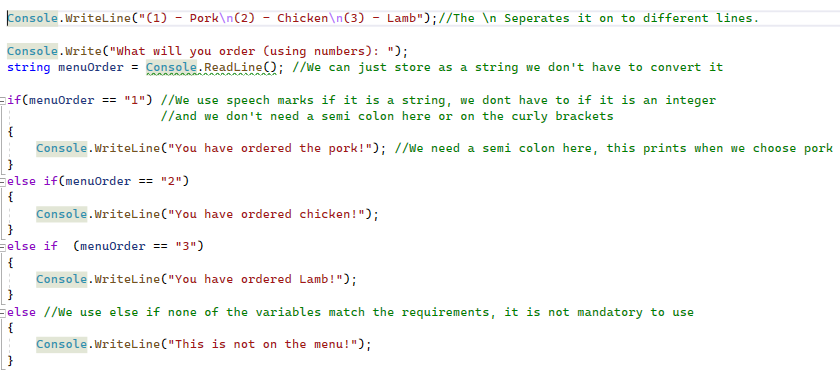
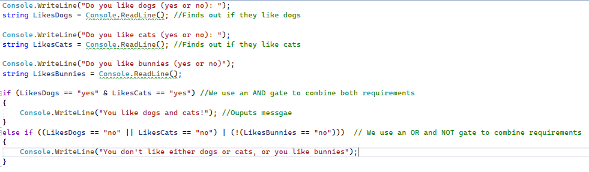

In daily life, we are always making decisions, like if we should eat toast or eat cereal. These inputs have consequences. This idea can be summarised in an If Statement if we should make one choice or the other. Let's put this into practice using the skills we already have. In this example, we are going to make a basic ordering menu where we can order one of three items which will be either pork, chicken, or lamb. Firstly, we need to state what is on our menu, which can be achieved using Console.Writeline(), this can be done multiple times or in speech marks if you use \n this will take you to the next time in the same Console.Writeline(). In addition, we must number what each food is, for example, (1) -> Pork. Then we can store our number input using a variable (this must be stored in a number which I will explain why it is important later)! Now that our value is stored this can be entered into the if statement to show what we have ordered.
The structure of an if statement can look quite complicated but I will break it down. Firstly, we need to use If for the first line which shows we are introducing the statement. Next, we use brackets to show what value is needed so that we activate this If statement. In this case, for pork to be ordered the number we needed to input is a 1. Therefore, in our bracket, our variable which I will call numberOrdered must be equal to 1 for our statement to occur as it is a requirement. This can be annotated by (numberOrdered == 1). For If statements we use 2 equals signs and after the brackets part we do not add a semi colon instead we do something else. Now that we have our requirements met we must have an output for what will have, this can be done by placing it inside curly brackets {} after the brackets. For better formatting put in these two symbols and press enter then it should automatically format it for you and make it clearer by indenting it. The output must be inside these two curly brackets. We can then use our Console.Writeline() to output a message back for example, "We ordered it and it was very tasty!". We have now just completed the first If statement! Now we must add in the others. This works in a similar method but instead of If we use, else if – this shows that are using more than one if. The variable structure can then be changed over but the number equal to can be changed and the message outputted by what number we are ordering. Remember we can only print one of these values in the if statement so try not to make if statements overlap such as using 1 twice. However, you may be wondering what happens if we don't enter these numbers. This means the if statement can't be activated as it is not in it but, if we want to add in the rest to show that this option is invalid we can use else. When we use else we don't need a bracket with variables as it is the leftover requirement therefore we can use just else{}, with the message on the inside. Let's now put this into practice!

As you may have noticed in the experiment above If statements can be very picky! Firstly, all of the code inside of the if statement must be equally in line with one tab out from the if statement. Next, if you were to insert pork it would say that it is not on the menu, this is because the only value accepted is 1. This means that we want to accept 1 or pork, this is called Boolean logic. For this tutorial, we will look and AND, OR, and BUT. The AND gate can be used to combine requirements so that they both must be true and in code is written as &. The OR gate can be used so that it can be either requirement and is represented using |. The NOT gates mean that it must not have this requirement and the symbol for it is ! . These gates can also be combined to get a very specific result. However, if this becomes too complicated we can always stack if statements within each other, just remember to format it right. Let's now try this out:

User Challenge: Build a program to find out as much as you can about your user and create a custom output (using an if statement) for if they like or don't like something.